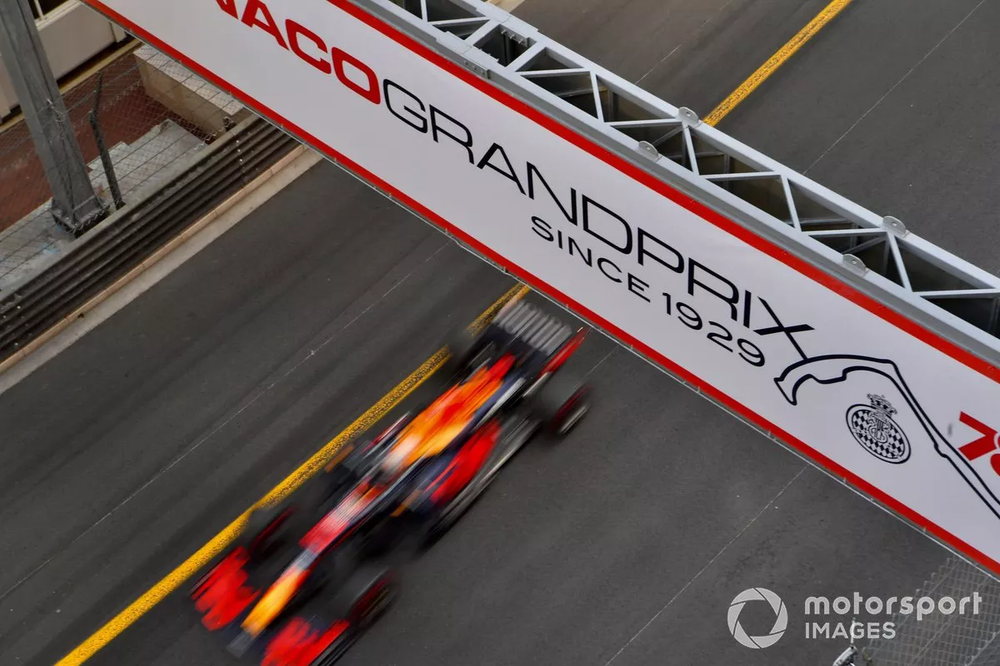

Mapa Interactivo del Circuito
Uso del mapa interactivo
Este es un mapa interactivo del circuito de Mónaco. Cada uno de los botones del mapa te mostrará mas información de esta sección de la pista, junto a una foto del lugar y un video de un acontecimiento que se ha dado en esa parte de la pista a lo largo de su historia en la Fórmula 1. ¡Toca cualquiera de los botones en el mapa para comenzar!

Descripción general del circuito: